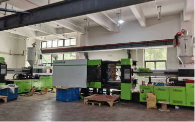
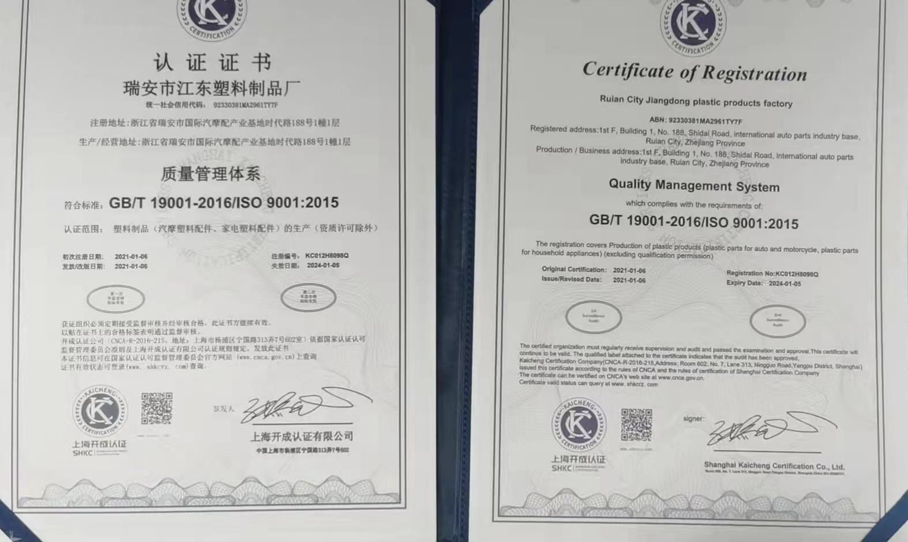
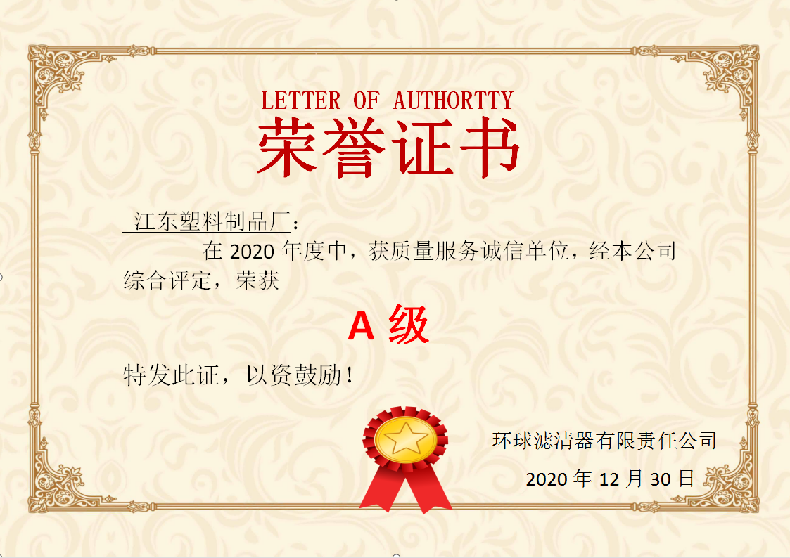
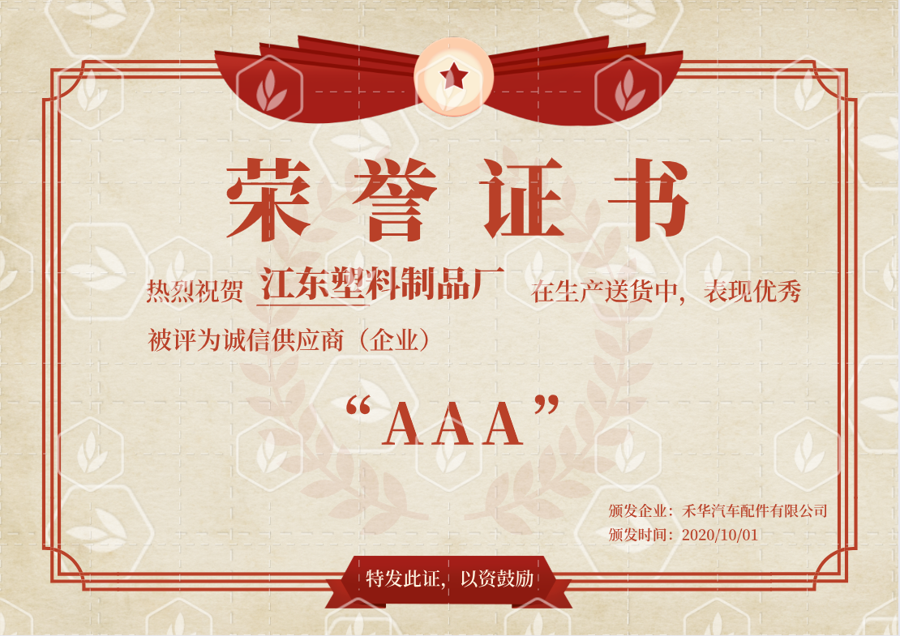
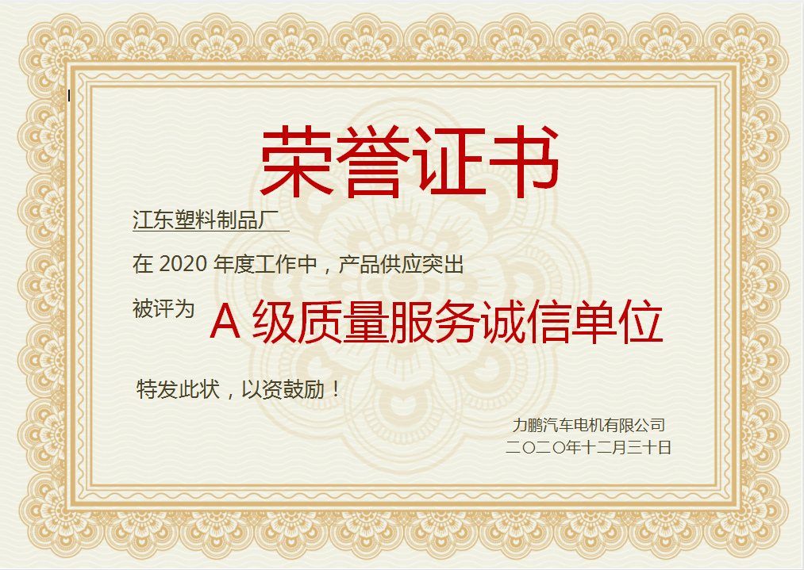

江东塑料成立
在瑞安汽摩配产业基地开启注塑制造业务。
关于江东
从2009年起，我们持续投入设备、人才与工艺，把客户的图纸和样品转化为稳定量产的塑料部件。

企业概况
是一家集模具研发、精密制作、注塑加工、来样开发于一体的现代化制造企业。服务客户覆盖汽车配件、电子电器、医疗器械、日用品等多个行业。
发展历程
在瑞安汽摩配产业基地开启注塑制造业务。
通过ISO 9001质量管理体系认证。
注资成立有限公司，拓展汽摩配件业务。
形成60余台设备与上百家稳定客户的制造体系。
生产体系
专业注塑工程师7人、技术工人45人、质量管控团队8人。
注塑车间、模具维护、物流仓储协同，通过ERP实现流程管理。
可处理ABS、PC、PA、PPS、PBT等工程塑料，满足多类工况。

资质荣誉




需要了解我们的制造能力？